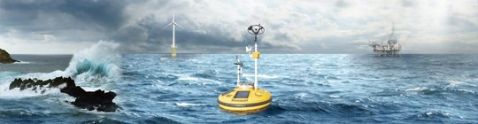

European Union European Industrial Doctorates 2020-2023 (project 859983)

2022-2026 (J=journal article,C=refereed conference article,A=Archived manuscript)
© 2026 Onno Bokhove
Template by Andreas Viklund. Panorama: Fugro GEOS. Photos: Breaking wave hitting a mono-pile offshore structure in the North Sea, www.flyingfocus.nl. Extreme wave hitting a wind turbine tower during model tests (MARIN)